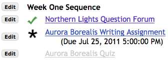

[ Retorna a la pàgina d'ajuda principal]
COM SEQÜENCIAR AMB L'EINA LLIÇONS
Pot ser que hi hagi usuaris amb la necessitat de controlar l'ordre en què els estudiants segueixen la unitat. Hi ha casos en que aquesta necessitat és un requeriment de grups externs, particularment en el cas de material usat en certificacions.
L'eina Lliçons intenta evitar el forçar els usuaris a seguir una ruta específica al treballar els materials. Permet declarar requeriments específics però deixant als estudiants la llibertat de consultar què hi ha més endavant si aquest fet no viola els requeriments.
La seqüència s'estableix especificant alguns elements com a obligatoris. Si és necessari podeu declarar que certs elements no es poden veure fins que s'hagin completat uns altres que en són requeriment.

Exemple 1. Pàgina de mostra amb dos elements obligatoris i un examen que es publicarà si es cumpleix certa condició. L'activitat de Fòrums amb la marca verda està completada. L'activitat amb l'estrella negra encara s'ha de completar. L'examen està enfosquit perquè no serà públic pels estudiants fins que hagin completat els elements anteriors.
Un exemple
Un escenari típic podria ser:
- Cada unitat conté materials de lectura i un examen de control. Una agència posa com a requeriment que els estudiants no obtindran uns crèdits si no han llegit part del material.
- Un cop els estudiants hagin completat totes les unitats poden fer l'examen final de certificació.
Per dur a terme tot això podeu organitzar el material en unitats, amb un examen com a darrer element en cada una. Amb el botó Edita podeu marcar com a "Obligatoris" els elements. En el cas de l'examen de la unitat cal que marqueu "No el publiquis fins que s'hagin completat tots els prerequisits". Mentre estigui marcat "No el publiquis.." l'element corresponent es mostrarà de color gris fins que tots els elements anterior marcats com a "Obligatoris" s'hagin completat.
Podeu declarar unitats senceres com a "Obligatori", fent ús del botó Configuració que apareix al costat del Títol de la unitat.
En aquest exemple, totes les unitats es poden configurar com a "Obligatori." Hi haurà una unitat final que contindrà només l'examen de certificació final. Es configuraria "No el publiquis fins que s'hagin completat tots els prerequisits".
Com forçar un ordre específic
Recomanem que no especifiqueu més requeriments dels necessaris. Si feu tots els elements obligatoris i hi restringiu l'accés és possible forçar els estudiants a treballar els elements en un ordre fixat. Normalment, però, no hi ha necessitat de fer-ho.
Per exigir que els elements es treballin en un cert ordre els podeu configurar tots com a obligatoris i també configurar-los tots menys el primer com a "No el publiquis fins que s'hagin completat tots els prerequisits". Com que els "no el publiquis" només publica un element quan tots els anteriors s'han completat, aquesta configuració els força a fer-los en una seqüència.
Activitats i proves obligatòries
Fer que activitats i proves siguin obligatòries és una mica més complicat que en el cas de les lectures. Podeu posar simplement com a requeriment que els estudiants els facin. Però també podeu demanar una puntuació mínima.
Si es posa una puntuació mínima cal pensar què fer si l'estudiant no l'assoleix. Podeu voler permetre que l'estudiant pugui tornar a presentar la prova o l'activitat. Aquest fet es controla a les eines corresponents, Activitats i Tests.
Cal adonar-se que és possible dins d'una unitat declarar més d'un element com a "No el publiquis ...". D'aquesta manera és possible que hi hagi diverses lectures obligatòries, una activitat que no estarà disponible fins que s'hagin completat les lectures, algunes lectures més i una prova o una activitat final. Un element marcat com a "No el publiquis " estarà disponible quan tots els elements obligatoris anteriors s'hagin completat.
Tot això vol dir que podeu forçar els estudiants a anar seguint els materials d'una unitat en un ordre fent que siguin tots ells obligatoris, i configurant-los tots menys el primer com a "No el publiquis". Tanmateix, cal dir que l'eina Lliçons no es va dissenyar seguint aquesta idea i pot ser que no sigui la millor eina per elaborar seqüències estrictament lineals.